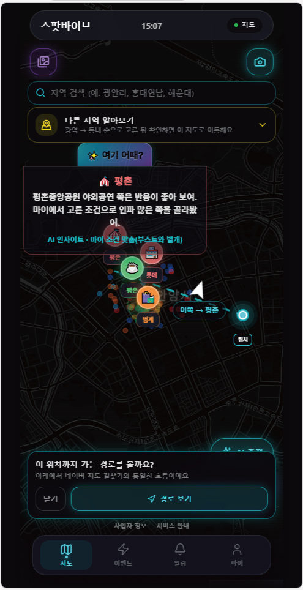

ENX SeaRestore해양 종자 살포 스마트 관제
CONCEPT · 실적이 증명되는 바다
손으로 쓰지 않는 살포,
GPS·IoT가 증명한다
수기 일지·엑셀 대신 전자 실적을 만듭니다. 환경 영향 평가·사업 결과 보고에 바로 쓰는 월 구독(SaaS) 관제입니다.
ha면적 자동 산출
SaaS초기 구축 최소
IoT직접 연동 PoC
AS-IS · 수기·분리
- 살포 면적·항적 엑셀·일지
- 파종 장치 ↔ 관제 연동 불가
- 사후 보고, 실시간 공백
TO-BE · SeaRestore
- 사업 기간 월 구독
- 투하 좌표·ha 실시간
- 기상·항로 AI 로그
01IoT
투하
›
투하
02클라우드
좌표
›
좌표
03관제
대시보드
대시보드

ENX 관제 UI — 지도·AI·실시간 레이어(시연 캡처)
SeaRestore 전용 — 살포·ha 화면은 PoC 시 별도 제공
망분리·전용망 — 기관 환경에 맞춘 확장
IoT ↔ 웹 서버 다이렉트 연동(PoC) 완료
펌웨어 단말 투하 신호 → 위도·경도·면적(ha) 즉시 반영. 이원 수집 원천기술(특허 출원 10-2026-0086686).
☁️
SaaS
URL 즉시 관제
📡
IoT
조작·누락 방지
📊
면적
ha 자동 근사
🌤️
AI 항로
기상·안전 보조
※ 블루카본·연안 정화·해양 생태복원 과제 PoC 협의